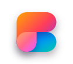
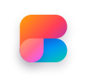

01 · All-in-one
현장과 같은 제작 프로세스
기획 → 글 → 인물·배경 → 콘티 → 연출 → 편집까지, 실제 영상 현장과 같은 순서로 한 서비스 안에서 진행돼요. 단계마다 할 일이 정해져 있어서 어디서 무엇을 고치면 되는지 헷갈리지 않아요.
- 6단계를 한 서비스에서
- 현장과 같은 순서
- 단계마다 정해진 할 일
All-in-one Lumi와 함께 만드는 프리비즈 스튜디오
아이디어 한 줄이면 충분해요. Lumi가 산문을 쓰고, 인물과 배경을 그리고,
스토리보드로 먼저 보여 드려요. 마음에 들 때만 영상으로 옮겨요.
All-in-one · 한 줄의 여정
기획 · 글 · 인물 · 콘티 · 영상 · 편집까지 한 곳에서 이어져요. 다른 툴로 옮겨 다니지 않아도 돼요.
왜 Tale인가요
01 · All-in-one
기획 → 글 → 인물·배경 → 콘티 → 연출 → 편집까지, 실제 영상 현장과 같은 순서로 한 서비스 안에서 진행돼요. 단계마다 할 일이 정해져 있어서 어디서 무엇을 고치면 되는지 헷갈리지 않아요.
02
Lumi가 대화로 기획을 잡고 이야기로 풀어 줘요. 어려운 프롬프트도, 영상 지식도 없어도 누구나 시작할 수 있어요.
03
이야기에 필요한 인물과 배경을 먼저 뽑아 템플릿으로 만들어 두고, 각 샷에 그대로 붙여요. 그래서 컷마다 얼굴이나 장소가 바뀌는 오류가 크게 줄어요.
04
영상을 만들기 전에 러프 콘티로 확인하고 고쳐서 크레딧 낭비가 적어요. 카메라와 움직임은 말 대신 그림 위에 색 화살표로 그려서 지시해요.
작품
All-in-one
단계마다 잘 맞는 모델을 골라 써요. 따로 가입하거나 툴을 옮겨 다니지 않아도 돼요.


당신의 이야기는 당신의 것이에요. 만든 프로젝트 · 프롬프트 · 생성물은 어떤 AI 학습에도 쓰지 않아요.
All-in-one Tale 서비스
기획부터 편집까지 한 곳에서 끝나는 올인원 프리비즈 스튜디오예요. Tale이 잘하는 세 가지와 필요한 기능을 모았어요.
왜 Tale인가요
한 줄 아이디어를 장면이 보이는 산문으로 바꿔요. 마음에 안 드는 문단만 골라 “더 설레게”, “대사를 줄여서”처럼 말하면 그 부분만 다시 써요.
막연한 한 줄도 괜찮아요. Lumi가 장르, 인물 관계, 결말 방향을 몇 갈래로 펼쳐 보여 주고, 고르는 대로 이야기가 단단해져요.
영상부터 뽑으면 마음에 들 때까지 계속 다시 만들어야 해요. Tale은 컷마다 구도 · 카메라 · 조명을 콘티로 먼저 보여 줘요. 확정한 컷만 영상으로 옮기니 결과가 원하는 모습에 가까워요.
All-in-one
길이 · 결말 · 분위기, 말로 바꾸면 Lumi가 이야기와 컷 구성을 같이 고쳐요.
얼굴이 컷마다 바뀌지 않게, Lumi가 인물마다 보드를 먼저 만들어요. 얼굴 · 정면 · 측면 · 뒷모습을 한 장에.
6축 카메라 앵글과 조명을 컷 단위로.
컷 · 대사 · 카메라를 한 장으로. 팀과 바로 공유해요.
글에서 바로, 또는 확정한 콘티 이미지에서 영상으로.
요금
이미지는 언제나 무료예요. 콘티 · 컨셉 아트 · 인물 시트에는 Take를 쓰지 않아요.
결제는 준비 중이에요. 요금제와 Take 팩은 둘러볼 수 있어요.
월 구독
혼자 만드는 크리에이터
$15부터 / 월
한 번에 프로젝트 하나. 필요한 영상 분량을 골라요.
월 구독 팀 추천
제작팀
$199부터 / 월
더 많은 프로젝트와 계정, 팀을 위한 프리비즈 내보내기.
1회 충전
다음 생성을 위해
$29부터 · 1회
다시 만들기와 프리미엄 영상 모델에 쓸 Take를 충전해요.
모든 요금제는 같은 네 가지로 재요. 높은 요금제는 기능을 더 여는 게 아니라 여유를 더 줘요.
Take 1개는 720p 영상 한 번 생성이에요. 컷을 다시 만들거나, 1080p로 뽑거나, 프리미엄 모델을 쓰면 더 들어요. 생성 전에 항상 비용을 먼저 보여 드려요.
| 모델 | Take |
|---|---|
| Seedance Pro 720p | 1 |
| Seedance Pro 1080p | 4 |
| Seedance 2.0 Fast 720p | 4 |
| Seedance 2.0 720p | 5 |
| Seedance 2.0 1080p | 10 |
| 스토리보드 · 인물 시트 · 컨셉 이미지 | 0 |
연결 프로젝트 4개 또는 계정 8개가 넘나요? Studio는 연간 계약으로 Take를 함께 쓰고, 세금계산서와 전담 지원을 드려요. Studio S는 계정 10개 · 연 30,000 Take부터예요.
자주 묻는 질문
네. 한 줄만 적으면 Lumi가 장르와 길이를 묻고, 산문 · 인물 · 콘티 순서로 이어 가요. 각 단계에서 고르기만 하면 돼요.
영상은 한 번 만들 때마다 Take가 들어요. 콘티는 무료라서, 구도와 인물을 먼저 맞추고 확정한 컷만 영상으로 옮기면 다시 만드는 횟수가 확 줄어요.
아니요. 스토리보드 · 컨셉 아트 · 인물 시트는 어떤 요금제에서도 Take를 쓰지 않아요.
요금제 Take는 결제 주기가 끝나면 사라지고, 충전한 팩 Take는 12개월 동안 쓸 수 있어요. 무료 Take → 요금제 Take → 팩 Take 순서로 써요.
아니요. Tale에서 만든 프로젝트 · 프롬프트 · 생성물은 AI 모델 학습에 쓰지 않아요.
결제는 준비 중이에요. 요금제와 Take 팩은 미리 둘러볼 수 있어요.